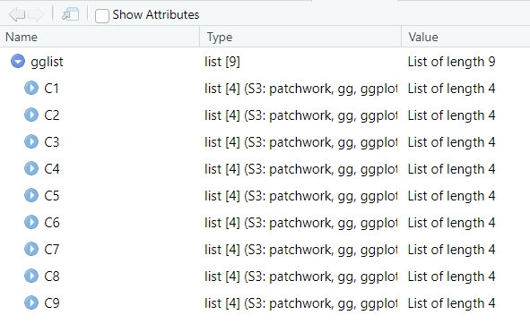
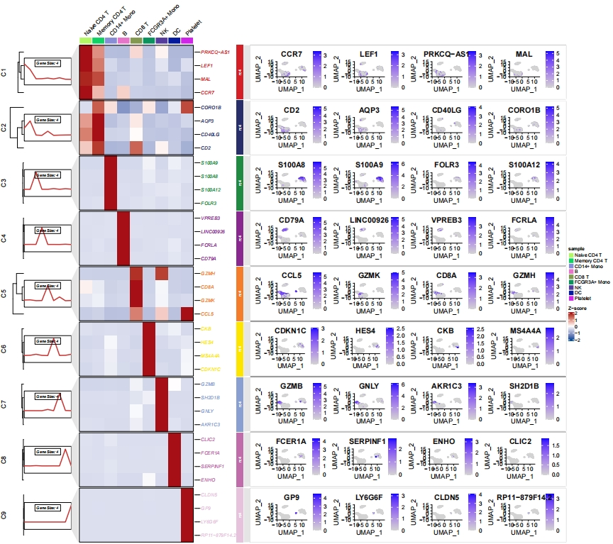
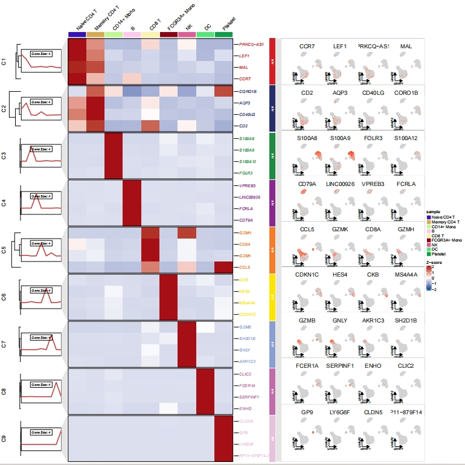
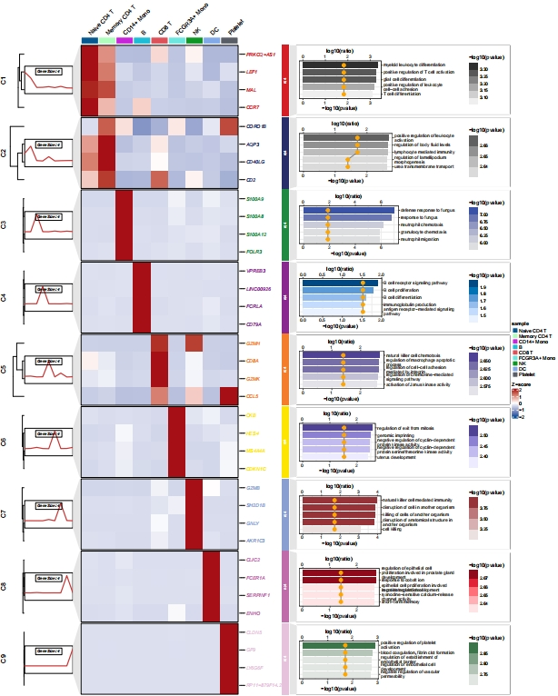
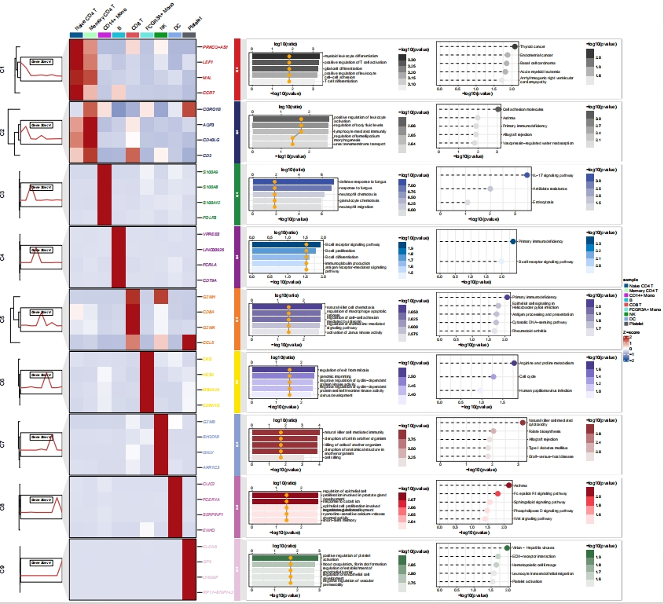

Chapter 7 Add custom annotation
I was thinking that ClusterGVis has some limitations when adding annotations to heatmaps. It would be better if we could customize and add relevant plots to each cluster, rather than being restricted to the data within the heatmap. So, you simply need to create the plot (using ggplot2), and then insert it into the relevant cluster, not limiting it to the heatmap data.
For example, when displaying marker genes in single-cell analysis, you could insert a feature plot (scatterplot) of the marker genes on the right side. Of course, any other kind of plot could also be used.
Additionally, I’ve added a new gglist parameter to ClusterGVis. You just need to provide a list of ggplot objects, making sure that the order corresponds correctly.
Create a scatter plot for marker genes for each celtype:
# find markers for every cluster compared to all remaining cells
# report only the positive ones
pbmc.markers.all <- Seurat::FindAllMarkers(pbmc,
only.pos = TRUE,
min.pct = 0.25,
logfc.threshold = 0.25)
# get top 10 genes
pbmc.markers <- pbmc.markers.all %>%
dplyr::group_by(cluster) %>%
dplyr::top_n(n = 4, wt = avg_log2FC)
# prepare data from seurat object
st.data <- prepareDataFromscRNA(object = pbmc,
diffData = pbmc.markers,
showAverage = TRUE)
# loop plot
lapply(unique(pbmc.markers$cluster), function(x){
tmp <- pbmc.markers |> dplyr::filter(cluster == x)
# plot
p <- Seurat::FeaturePlot(object = pbmc,
features = tmp$gene,
ncol = 4)
return(p)
}) -> gglist
# assign names
names(gglist) <- paste("C",1:9,sep = "")
Insert scatter plot:
pdf('sc_ggplot.pdf',height = 16,width = 18,onefile = F)
visCluster(object = st.data,
plot.type = "both",
line.side = "left",
column_names_rot = 45,
markGenes = pbmc.markers$gene,
cluster.order = c(1:9),
ggplot.panel.arg = c(4,1,24,"grey90",NA),
gglist = gglist)
dev.off()
Use scRNAtoolVis to generate scatter plot:
library(scRNAtoolVis)
# loop plot
lapply(unique(pbmc.markers$cluster), function(x){
tmp <- pbmc.markers |> dplyr::filter(cluster == x)
# plot
p <-
featureCornerAxes(object = pbmc,
reduction = 'umap',
groupFacet = NULL,
relLength = 0.65,
relDist = 0.2,
cornerTextSize = 2.5,
features = tmp$gene,
show.legend = F)
return(p)
}) -> gglist
# assign names
names(gglist) <- paste("C",1:9,sep = "")
# insert scatter plot
pdf('sc_ggplot_scRNAtoolVis.pdf',height = 16,width = 16,onefile = F)
visCluster(object = st.data,
plot.type = "both",
line.side = "left",
column_names_rot = 45,
markGenes = pbmc.markers$gene,
cluster.order = c(1:9),
ggplot.panel.arg = c(5,1,13,"grey90",NA),
gglist = gglist)
dev.off()
Add custom enrichment plot:
# enrich for clusters
enrich <- enrichCluster(object = st.data,
OrgDb = org.Hs.eg.db,
type = "BP",
organism = "hsa",
pvalueCutoff = 0.5,
topn = 5,
seed = 5201314)
# check
head(enrich,3)
# group Description pvalue ratio
# GO:0002573 C1 myeloid leukocyte differentiation 0.0003941646 66.66667
# GO:0050870 C1 positive regulation of T cell activation 0.0005222343 66.66667
# GO:1903039 C1 positive regulation of leukocyte cell-cell adhesion 0.0006265618 66.66667
# barplot
palette = c("Grays","Light Grays","Blues2","Blues3","Purples2","Purples3","Reds2","Reds3","Greens2")
# loop
lapply(seq_along(unique(enrich$group)), function(x){
tmp <- enrich |> dplyr::filter(group == unique(enrich$group)[x]) |>
dplyr::arrange(desc(pvalue))
tmp$Description <- factor(tmp$Description,levels = tmp$Description)
# plot
p <-
ggplot(tmp) +
geom_col(aes(x = -log10(pvalue),y = Description,fill = -log10(pvalue)),
width = 0.75) +
geom_line(aes(x = log10(ratio),y = as.numeric(Description)),color = "grey50") +
geom_point(aes(x = log10(ratio),y = Description),size = 3,color = "orange") +
theme_bw() +
scale_y_discrete(position = "right",
labels = function(x) stringr::str_wrap(x, width = 40)) +
scale_x_continuous(sec.axis = sec_axis(~.,name = "log10(ratio)")) +
colorspace::scale_fill_binned_sequential(palette = palette[x]) +
ylab("")
return(p)
}) -> gglist
# assign names
names(gglist) <- paste("C",1:9,sep = "")
# insert bar plot
pdf('sc_ggplot_go.pdf',height = 20,width = 16,onefile = F)
visCluster(object = st.data,
plot.type = "both",
line.side = "left",
column_names_rot = 45,
markGenes = pbmc.markers$gene,
cluster.order = c(1:9),
ggplot.panel.arg = c(5,0.5,16,"grey90",NA),
gglist = gglist)
dev.off()
Add GO and KEGG enrichment annotation:
# enrich for clusters
enrich <- enrichCluster(object = st.data,
OrgDb = org.Hs.eg.db,
type = "BP",
organism = "hsa",
pvalueCutoff = 0.5,
topn = 5,
seed = 5201314)
# check
head(enrich,3)
# group Description pvalue ratio
# GO:0002573 C1 myeloid leukocyte differentiation 0.0003941646 66.66667
# GO:0050870 C1 positive regulation of T cell activation 0.0005222343 66.66667
# GO:1903039 C1 positive regulation of leukocyte cell-cell adhesion 0.0006265618 66.66667
enrich.KEGG <- enrichCluster(object = st.data,
OrgDb = org.Hs.eg.db,
type = "KEGG",
organism = "hsa",
pvalueCutoff = 0.9,
topn = 5,
seed = 5201314)
# check
head(enrich.KEGG,3)
# group Description pvalue ratio
# hsa00640 C1 Propanoate metabolism 0.01115231 33.33333
# hsa05216 C1 Thyroid cancer 0.01288734 33.33333
# hsa00620 C1 Pyruvate metabolism 0.01635129 33.33333
palette = c("Grays","Light Grays","Blues2","Blues3","Purples2","Purples3","Reds2","Reds3","Greens2")
# loop
lapply(seq_along(unique(enrich$group)), function(x){
# go plot
tmp <- enrich |> dplyr::filter(group == unique(enrich$group)[x]) |>
dplyr::arrange(desc(pvalue))
tmp$Description <- factor(tmp$Description,levels = tmp$Description)
# plot
p <-
ggplot(tmp) +
geom_col(aes(x = -log10(pvalue),y = Description,fill = -log10(pvalue)),
width = 0.75) +
geom_line(aes(x = log10(ratio),y = as.numeric(Description)),color = "grey50") +
geom_point(aes(x = log10(ratio),y = Description),size = 3,color = "orange") +
theme_bw() +
scale_y_discrete(position = "right",
labels = function(x) stringr::str_wrap(x, width = 40)) +
scale_x_continuous(sec.axis = sec_axis(~.,name = "log10(ratio)")) +
colorspace::scale_fill_binned_sequential(palette = palette[x]) +
ylab("")
# plot kegg
tmp.kg <- enrich.KEGG |> dplyr::filter(group == unique(enrich.KEGG$group)[x]) |>
dplyr::arrange(desc(pvalue))
tmp.kg$Description <- factor(tmp.kg$Description,levels = tmp.kg$Description)
# plot
pk <-
ggplot(tmp.kg) +
geom_segment(aes(x = 0,xend = -log10(pvalue),y = Description,yend = Description),
lty = "dashed",linewidth = 0.75) +
geom_point(aes(x = -log10(pvalue),y = Description,color = -log10(pvalue)),size = 5) +
theme_bw() +
scale_y_discrete(position = "right",
labels = function(x) stringr::str_wrap(x, width = 40)) +
colorspace::scale_color_binned_sequential(palette = palette[x]) +
ylab("") + xlab("-log10(pvalue)")
# combine
cb <- cowplot::plot_grid(plotlist = list(p,pk))
return(cb)
}) -> gglist
# assign names
names(gglist) <- paste("C",1:9,sep = "")
# insert bar plot
pdf('sc_ggplot_gokegg.pdf',height = 20,width = 22,onefile = F)
visCluster(object = st.data,
plot.type = "both",
line.side = "left",
column_names_rot = 45,
markGenes = pbmc.markers$gene,
cluster.order = c(1:9),
ggplot.panel.arg = c(5,0.5,32,"grey90",NA),
gglist = gglist)
dev.off()